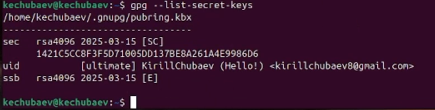
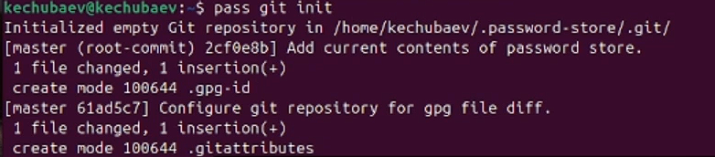
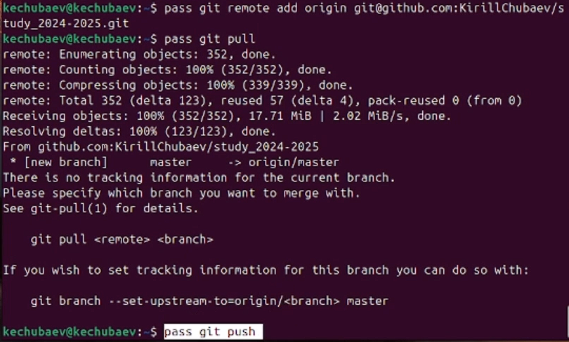
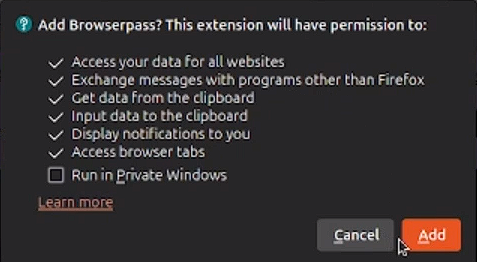
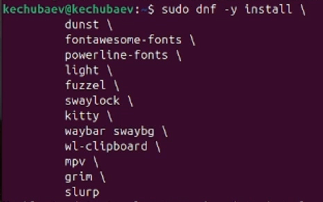
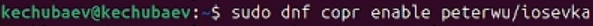
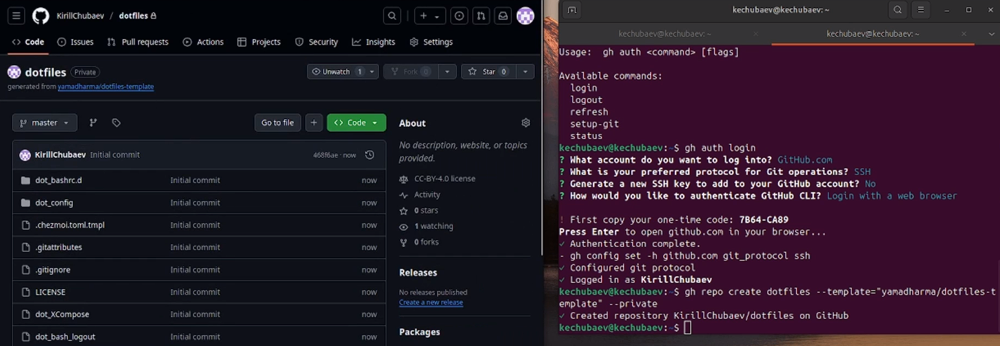
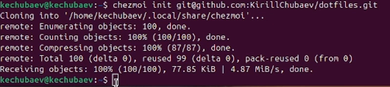
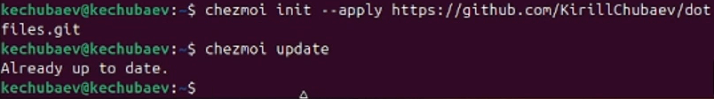
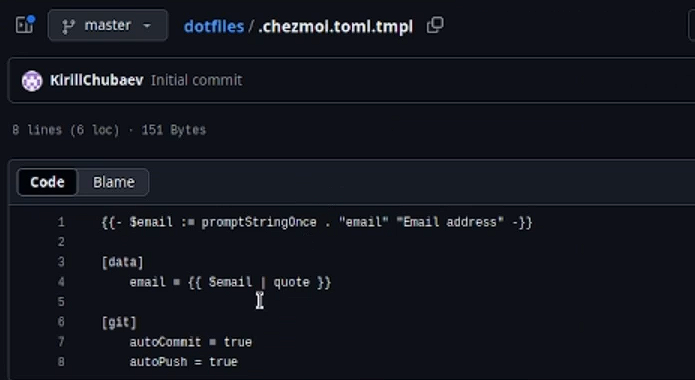

Цель работы
Цель данной работы - настроить рабочую среду, научиться пользоваться
менеджером паролей pass и командой chezmoi.
Выполнение лабораторной
работы
- Я установил команду pass и просмотрел список ключей:

- Далее инициализировал хранилище:

- Затем создал структуру с git:

- Потом задал адрес репозитория на хостинге и выполнил команды git
pull и git push для синхронизации:

- Далее я установил плагин browserpass для Firefox:

- Потом установил дополнительное программное обеспечение и
дополнительные шрифты:
 
- Затем я начал создавать собственный репозиторий с помощью
утилит:

- Инициализировал chezmoi с моим репозиторием dotfiles:

- Потом установил свои dotfiles на новый компьютер с помощью одной
команды:

- Далее я поставил настройку чтобы изменения фиксировались и
отправлялись автоматически в репозиторий:

Выводы
В ходе данной лабораторной работы я настроил свою рабочую среду и
научился пользоваться менеджером паролей pass и командной chezmoi.